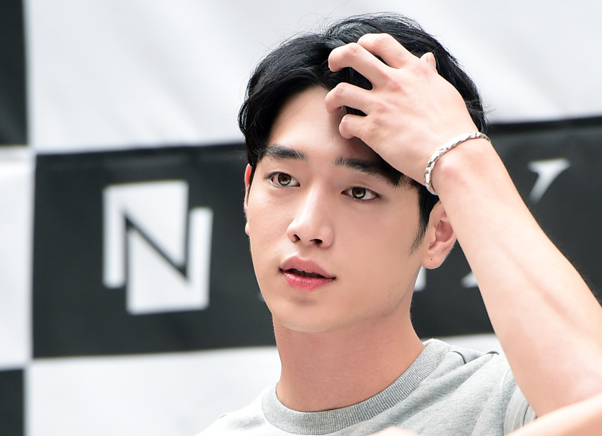
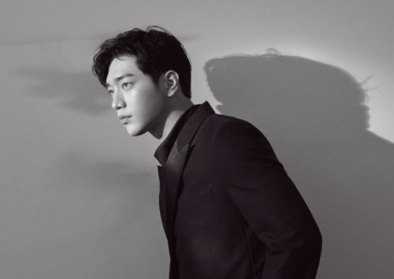

Youtube
#잘생긴
#서강준
#좋다
서강준 잘생겼다 서강준 잘생겼다 서강준 잘생겼다 서강준 잘생겼다 서강준 잘생겼다 서강준 잘생겼다 서강준 잘생겼다 서강준 잘생겼다 서강준 잘생겼다 서강준 잘생겼다 서강준 잘생겼다 서강준 잘생겼다
1M views 1 month ago
1K
0
Share
Save
Report
서강준
100M subscribers
subscribe
Up next

서강준 잘생겼다 서강준 잘생겼다 서강준 잘생겼다 서강준 잘생겼다
서강준
100M subscribers

서강준 잘생겼다 서강준 잘생겼다 서강준 잘생겼다 서강준 잘생겼다
서강준
100M subscribers
서강준 잘생겼다 서강준 잘생겼다 서강준 잘생겼다 서강준 잘생겼다
서강준
100M subscribers
 서강준 잘생겼다 서강준 잘생겼다 서강준 잘생겼다 서강준 잘생겼다 서강준 100M subscribers
서강준 잘생겼다 서강준 잘생겼다 서강준 잘생겼다 서강준 잘생겼다 서강준 100M subscribers